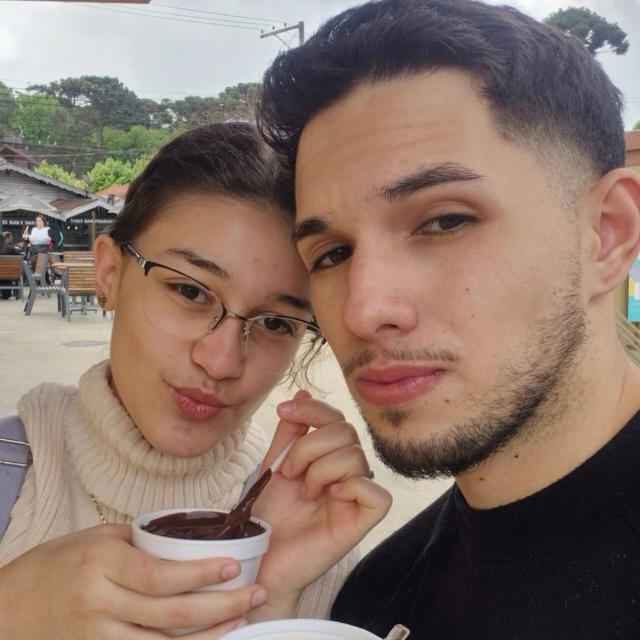

Se eu pudesse escolher novamente, entre tantos caminhos e destinos, eu ainda escolheria encontrar você, e viver de novo cada pedacinho da história que estamos construindo. Porque, entre tantas coisas bonitas da vida, uma das minhas favoritas é amar você.
